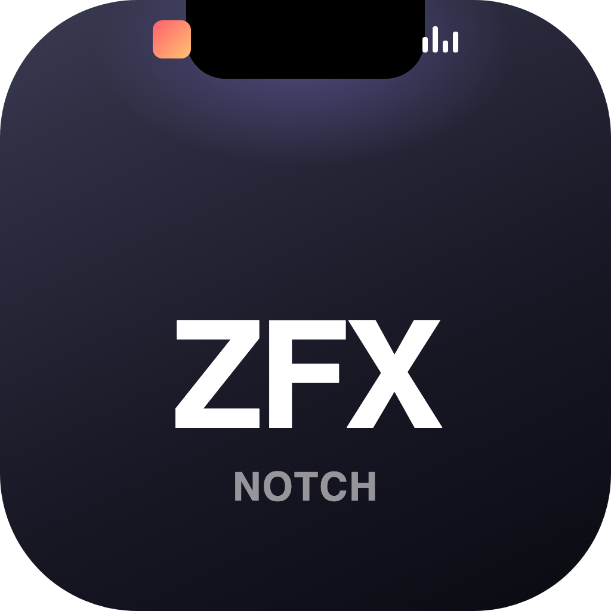
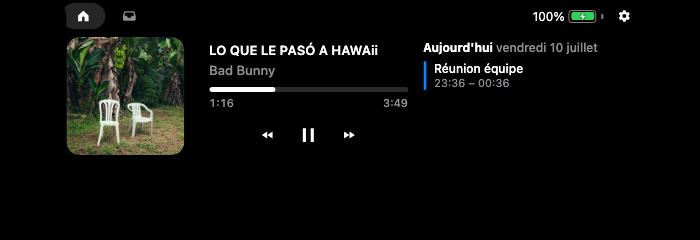
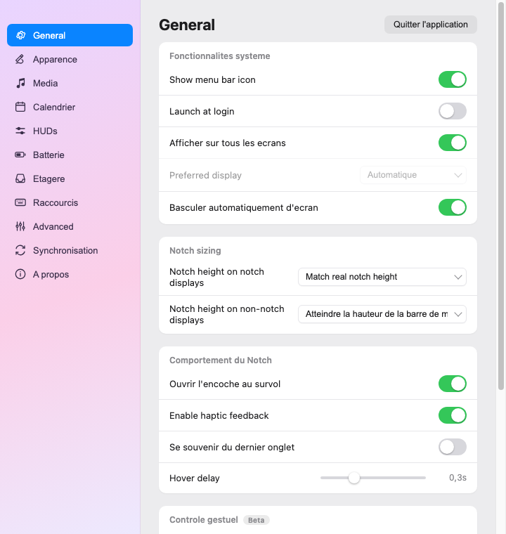

L'encoche interactive façon Dynamic Island pour macOS — étagère de fichiers, lecteur média, calendrier et HUD volume/luminosité, plus la synchro de fichiers Mac ⇄ PC sur le réseau local.
Gratuit et open-source · MIT

Encoche ouverte — lecteur média (pochette, contrôles) et calendrier du jour.
Glisse des fichiers vers l'encoche : ils s'y posent. Multi-sélection au lasso, glisser-déposer sortant.
Les AirDrop reçus et tes captures d'écran se copient automatiquement dans l'étagère.
Pochette, titre, artiste, progression et contrôles play/pause/suivant (Spotify & Apple Music).
Pochette + spectre animé de chaque côté de l'encoche fermée pendant la lecture.
Remplace la jauge native de macOS par une jauge élégante dans l'encoche.
Tes événements du jour directement dans l'encoche, via EventKit.
Envoie des fichiers à un pair sur le réseau local, découverte automatique.
Une encoche par écran, fine et discrète sur les moniteurs externes.
11 pages de réglages : tout est personnalisable.

Une fenêtre Paramètres complète, fidèle aux meilleures apps d'encoche : apparence, média, calendrier, HUDs, batterie, étagère, raccourcis, et plus.